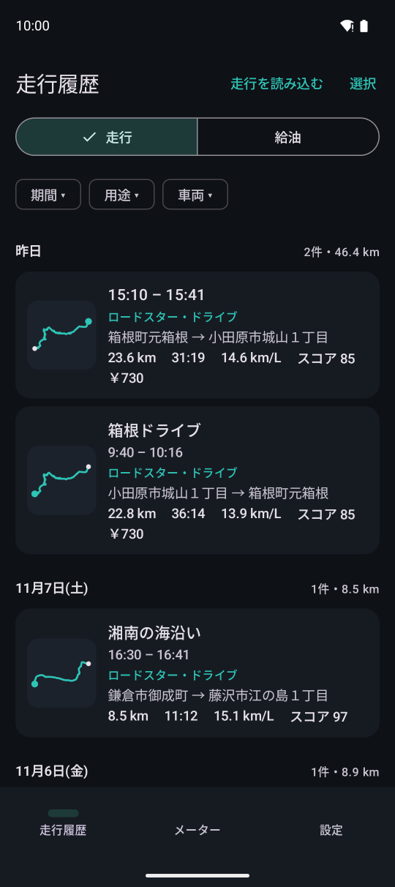
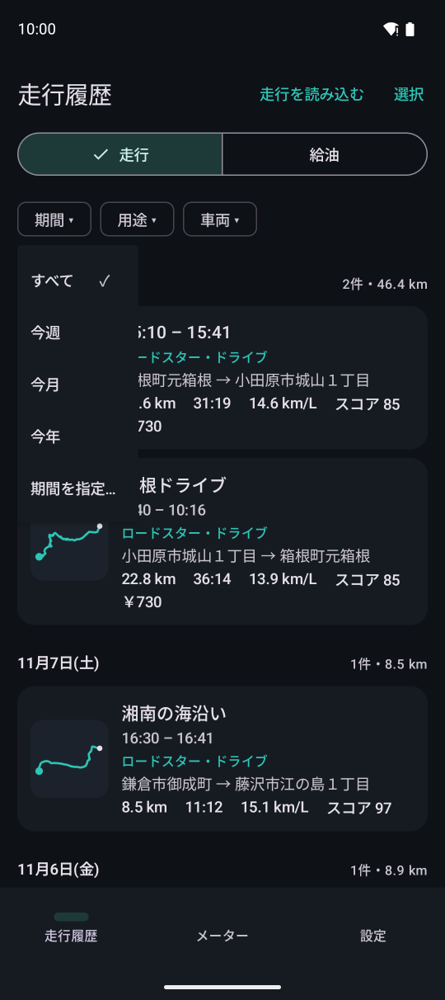
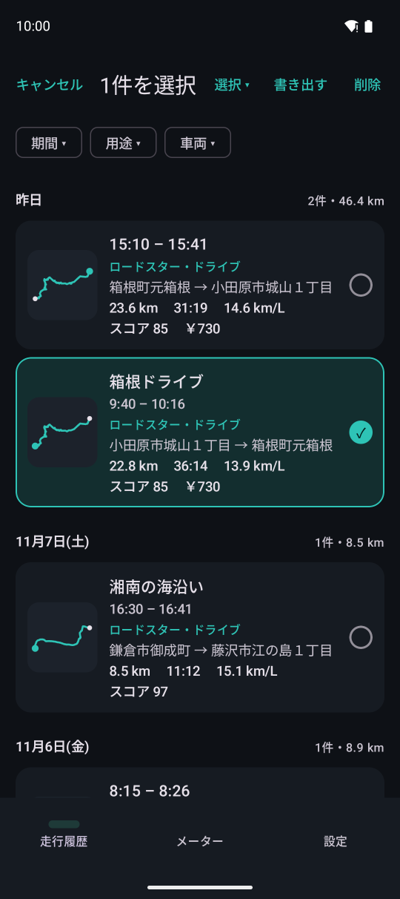

走行履歴
記録した走行を日ごとに並べます。行を押すと走行詳細（リプレイ）を開きます。

12345- 1走行と給油記録の切り替え
- 2絞り込み（期間・用途・車両など）
- 3走行。ルートの小さな絵・時刻・車両と用途・出発地と到着地・距離・時間・燃費・運転スコア・費用
- 4ほかの端末から送られた走行（CarReplotter 形式）を読み込みます
- 5走行を選んで、まとめて書き出す・消す

期間で絞り込む（今週・今月・今年・期間を指定）。期間の絞り込みはプレミアムプランの機能です。

選択モード。選んだ走行を CSV（1 走行 1 行。経費の精算向け）で書き出したり、消したりできます。
出発地・到着地は住所で表示します。自宅などを登録地点にすると、その名前で表示し、その近くでは住所を問い合わせません（走行詳細の「登録地点にする」、または設定の「地点と住所」）。
設定の「地点と住所」で「走行時の天気を記録する」をオンにすると、出発・休憩・到着のときの天気を「☀️→☁️」のように出します（走行詳細には気温も出します）。
フリープランでは、新しい 10 件の走行を表示します。古い走行も消えずに残っていて、プレミアムプランにするとすべて表示します。